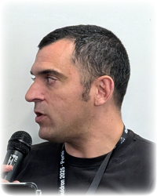

Next steps for BPF support in the GNU toolchain
Integrating BTF and CTF
The BPF type format (BTF) represents the types of kernel data structures and functions; it is used to enable BPF programs to run on multiple kernels, and by the verifier to ensure program correctness, among other uses. It is derived from the Compact C Type Format (CTF), which is a more general-purpose format that makes debugging information available for compiled programs. Nick Alcock gave a high-speed presentation of his work to reunify those two formats.
The libctf library, which works with CTF, is now able to both produce and consume BTF, he began. It can also work with an under-development "CTFv4" format that adds support for some of the trickier cases. This work is being tied into the kernel build, which would allow the creation of BTF directly when building the kernel, rather than as a separate step using the pahole utility as is done now.
There are a couple of enhancements that are needed before BTF can completely replace CTF beyond the kernel, though. A string header field is needed to be able to separate the BTF from each translation unit when the results are all combined. Some sort of agreement on a format for referring to structure members in archives (holding BTF data for multiple translation units) is required for compaction purposes. To be able to use this format in user space, there has to be a representation for floating-point data — a feature the kernel has never needed. With those in place, the extra capabilities provided by CTF would only be needed to represent huge structures (rather larger than would ever make sense in the kernel) and conflicting types with the same name. Then, GCC could create BTF for both kernel and user space, with the toolchain performing deduplication as well.
Alexei Starovoitov questioned the need for these features, saying that BTF is a kernel-specific format that does not have to support user space. José Marchesi agreed to an extent, but said that wider availability and usage of the format is needed to ensure high-quality toolchain support. Sam James asked whether BTF could represent C++ programs; the answer was that CTF is still needed for those. Handling C++ with BTF would be possible, Alcock said, with the addition of some new type codes and not much more.
GCC port status
Marchesi then shifted the discussion to the status of the GCC BPF backend (or "port" in GCC jargon); the goal of that project, he said, is to turn GCC into the primary compiler for BPF code. That is a relatively new objective, he added; the previous goal had been to produce something that worked at all, with no ambitions beyond that.
Starovoitov took over to communicate his highest-priority request: the
addition of support for the btf_decl_tag and btf_type_tag
attributes to GCC. Their absence, he said, is the biggest blocker to
adoption of GCC for compilation to BPF. Pointers in the kernel can carry
annotations like __rcu or __user to indicate,
respectively, that the pointed-to memory is protected by read-copy-update
or is located in user space. When these annotations are reflected in BTF
with the requested attributes, the BPF verifier can use them to check that
memory is being accessed in a valid and safe way. There are a lot of hacky
workarounds in place to cope with their absence now, but Starovoitov would
love to be able to replace them with proper attribute support: "Please
do it yesterday
".
Notably, David Faust, who was in the session, posted a patch series adding this support the following day. Interested readers will find much more information about how these attributes work in the cover letter.
Marchesi returned to quickly go over a number of other bits of news regarding the BPF backend. There is now an extensive test suite in GCC to validate BPF compilation, which is a nice step forward. The BPF port mostly works, but there are various bugs in the compiler that still need to be addressed. It may be necessary to add support for the may_goto instruction to the assembler. And, naturally, there is the constant challenge of producing code that will not run afoul of the BPF verifier — a topic to which the group returned shortly thereafter.
The status update concluded with a request for help from the GCC community to finish getting the BPF port into shape. He and the others working on this code do not do so full time, and BPF itself is an area of active development that is hard to keep up with. A bit of assistance, he said, would enable the job to be finished sooner. Starovoitov answered that BPF developers tend to work with LLVM instead because they can get their changes accepted quickly; the GCC process is slower and harder to work with. Marchesi said that the GCC community can be strict, but it tends to be strict in the right places. Work there can take time, but the quality of the result will be excellent.
Verification challenges

The core challenge, Zingerman began, is that the various optimization passes made by the compiler can transform the code significantly, producing a result that is hard or impossible to verify. The verifier is a path-tracing machine, which tracks the state of the stack and registers as it steps through the code, forking its representation at each branch point. It is able to track the ranges of variables through a number of operations, but is unable to track the relationships between scalars and pointers. That inability makes itself felt in a number of ways.
For example, a programmer might write code like:
offset = ...;
if (offset < 42) {
ptr = packet + offset;
/* ... */
If the verifier knows that the length of the data pointed to by packet is at least 42, it can determine that this pointer assignment is safe. But an optimizer might hoist some of the calculation outside of the conditional branch, producing code like:
offset = ...;
ptr = packet + offset;
if (offset < 42) {
/* ... */
Now the verifier is not able to verify that the assignment of ptr is correct, so the code is no longer verifiable. The LLVM BPF port, he said, works around this kind of problem by injecting calls to special intrinsic functions that inhibit this kind of optimization.
Zingerman provided a couple of other examples of how optimization can break verification and the sorts of workarounds that the LLVM developers have adopted to make things work. But, he said, the strategy in the LLVM camp has been almost entirely reactive — wait until something breaks, then figure out a way to prevent it. What, he asked, is the GCC approach? Marchesi replied that, so far, there is no strategy at all, but that needs to change.
In the resulting discussion, it was suggested that the proposed new compiler flag should be -fverifiable instead, a suggestion that seemed to find general acceptance. The actual implementation of that option is a harder task, though. Nick Clifton asked whether the developers could just maintain a list of optimization passes that are known to break verification and should just be skipped. The problem with that approach, Faust said, is that the problems usually come about as the result of specific transformations within a pass that makes a number of other optimizations that are still wanted.
Marchesi added that optimization in general is needed for BPF output; among other things, programs may exceed the limits on the number of BPF instructions without it. His plan is to put the new flag in place, then start adapting the problematic optimization passes to avoid breaking verification. Clifton noted that the verifier might improve over time and accept code that is rejected now, so the compiler needs to be told which version of the verifier is being built for. Others pointed out that there are multiple verifiers in existence, complicating the situation further.
There was a brief mention of Krister Walfridsson's smtgcc tool, which is designed to catch optimization problems in general. Walfridsson, who was present, was not convinced that smtgcc would be helpful for this specific problem, though.
As the time for this extended session ran out, Clifton said that he found
the whole idea of verifier-aware compilation to be a bit
"distasteful
". The more that the compiler avoids verification
problems, the less pressure there is on the verifier itself to fix those
problems for real. Perhaps it would be better to put effort into improving
the verifier instead, he suggested. Marchesi replied that the verifier
exists to make it possible to load programs into the kernel and run them
safely. The pressure to make that work should be shared among all parties,
he said.
[Thanks to the Linux Foundation, LWN's travel sponsor, for supporting my
travel to this event.]
| Index entries for this article | |
|---|---|
| Kernel | BPF/Compiler support |
| Conference | GNU Tools Cauldron/2025 |
Posted Oct 8, 2025 12:29 UTC (Wed)
by nix (subscriber, #2304)
[Link]
Posted Oct 10, 2025 16:28 UTC (Fri)
by corbet (editor, #1)
[Link]
No need for translation unit name header in BTF after all
The video from this session is now available.
Video